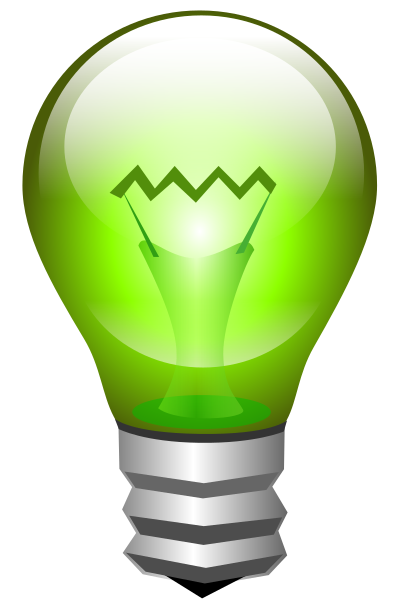

2. How to improve efficiency? / ¿Cómo mejorar la eficiencia?
Dictionary / Diccionario
Computer
Definition
An electronic device that is used to store information and work with it.
Un aparato electrónico que se usa para almacenar información y trabajar con él.
Example
My father has a new computer at work.
Mi padre tiene un ordenador nuevo en el trabajo.
Light Bulb
Definition
A device that produces light from electricity.
Un dispositivo que produce luz a partir de la electricidad.
Example
The oldest light bulb in the world is still on.
La bombilla más antigua del mundo sigue encendida.
💡 In our school, we use a lot of electricity! We turn on lights, computers 💻, projectors 📽️, and TVs every day.
Sometimes, we forget to turn off the lights when we go to the gym 🏃♂️, the tech lab 🔧, or break time 🌤️.
How can we save energy and help the planet ? 🌱
It's hard, but don’t worry! Step by step.
You know some math that can help! 📏🧮
What will you do? 1️⃣ First, check how much energy the school uses. 2️⃣ See if the school uses energy well. 3️⃣Think of ideas to save energy!
Let’s start and make our school better for the planet!
Definition:
An electronic device that is used to store information and work with it.
Un aparato electrónico que se usa para almacenar información y trabajar con él.
Example:
My father has a new computer at work.
Mi padre tiene un ordenador nuevo en el trabajo.
Definition:
A device that produces light from electricity.
Un dispositivo que produce luz a partir de la electricidad.
Example:
The oldest light bulb in the world is still on.
La bombilla más antigua del mundo sigue encendida.
Do you need help?
💡 ¡En nuestro insti gastamos muchísima electricidad! Encendemos luces, ordenadores 💻, proyectores 📽️, y TVs todos los días.
A veces, olvidamos apagar las luces cuando vamos al gimnasio 🏃♂️, al aula de tecnología🔧, o al recreo 🌤️.
¿Cómo podemos ahorrar energía y ayudar al planeta ? 🌱
Parece difícil, pero ¡no os preocupéis! Lo haremos paso a paso.
¡Ya sabéis mates que os pueden venir de perlas! 📏🧮
¿Qué vamos a hacer? 1️⃣ Primero, vamos a comprobar cuánta energía gasta el insti. 2️⃣ Después, vamos a ver si el insti aprovecha bien la energía. 3️⃣ ¡Vamos a pensar ideas para ahorrar energía!
¡Vamos a empezar y a hacer de nuestro insti un lugar mejor para el planeta!
1. Use and understanding / Consumo y conciencia

First, we need to know how much energy our school uses — and how to save it !
We will work in groups of 4. Each group will check energy use and make a plan to save energy in the old part of the building.
Then, one student from each group will share the plan with the class.
Together, we will choose the best plan or mix the best ideas.
For your plan, think about :
1️⃣ Check how much energy the school uses. 2️⃣ Find ways to save energy: 🌟Turn lights on/off when needed. 🌞Use natural light (open blinds). 🏠 Make rooms warmer in winter and cooler in summer. 💡 Use energy-saving lights. 🔌Turn off things not in use. 🚪 Check rooms not being used. 🌡️ Fix temperature problems. 3️⃣ Add your own good ideas!
A group of people dedicated to a specific purpose.
Un grupo de personas dedicadas a un fin concreto.
Example:
Our school patrol keeps the playground clean.
Nuestra patrulla escolar mantiene limpio el patio del recreo.
Do you need help?
Primero, necesitamos saber cuánta energía usa nuestra escuela y cómo ahorrarla. Trabajaremos en grupos de 4 para estudiar el uso de energía y hacer un plan para ahorrar energía en la parte más antigua del edificio. Luego, un estudiante de cada grupo compartirá el plan con la clase. Juntos elegiremos el mejor plan o mezclaremos las mejores ideas.
Para el plan, piensa en estas ideas:
1️⃣ Revisa cuánta energía usa la escuela. 2️⃣ Encuentra formas de ahorrar energía: Apaga y enciende las luces cuando sea necesario. Usa luz natural abriendo las persianas. Mejora el aislamiento. Cambia las luces por otras de bajo consumo. Apaga los dispositivos en modo de espera. Revisa las aulas que no se están usando. Arregla los problemas de temperatura (demasiado caliente en invierno, demasiado frío en verano). 3️⃣¡Cualquier otra buena idea!
Enseñemos a los demás a ahorrar energía:
Coloca carteles.
Haz charlas con expertos o estudiantes.
Crea una patrulla de energía.
¡Fomenta el reciclaje!
You can download the sheet and fill it out. Remember to save it when you finish. You can print it and fill it out on paper.
Puedes descargar la ficha y rellenarla. Acuérdate de guardarla cuando acabes. También puedes imprimirla y rellenarla en papel.
Nuestra profesora nos incentiva cada día a ser mejores estudiantes.
Motus dice Close your eyes and feel / Cierra los ojos y siente...
¿Cómo te has sentido con esta actividad?
Una actividad de clase puede hacernos sentir de muchas maneras: confundido, aliviada, inseguro, tensa, alegre, orgullosa, enfadado…
La forma en la que respondes ante una actividad puede decirte muchas cosas sobre ti.
Si te sientes confundido o insegura, es porque se trata de una actividad nueva que no sabes muy bien cómo resolver. Si te sientes contenta, alegre u orgulloso, seguramente es porque sabes que serás capaz de hacerla muy bien.
Si te sientes enfadada o tenso, es porque esa actividad es muy difícil o muy importante. Conocer las emociones que sientes cuando vas a hacer una actividad te ayudará a:
Think about how to save energy and reduce noise in the classroom. Answer these questions for your project:
1️⃣ What color will you paint the walls? 2️⃣ What kind of lights will you use? 3️⃣ What old things will you change? 4️⃣ How will you make the air better? 5️⃣ How can you help your friends save energy? 6️⃣ How can you reduce noise in the classroom?
Need heltp?
Piensa en cómo ahorrar energía en el aula. Responde estas preguntas para tu proyecto.
1️⃣ ¿Qué colores vas a usar para pintar las paredes? 2️⃣ ¿Qué tipo de luces vas a usar? 3️⃣ ¿Qué elementos antiguos vas a cambiar? 4️⃣ ¿Cómo mejorarás la calidad del aire? 5️⃣ ¿Cómo puedes ayudar a tus amigos a ahorrar energía? 6️⃣ ¿Cómo puedes reducir el ruido en el aula?
Option A. Expore and find / Opción A. Observa y detecta.